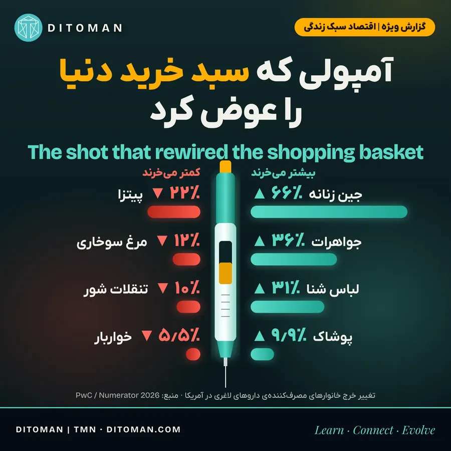
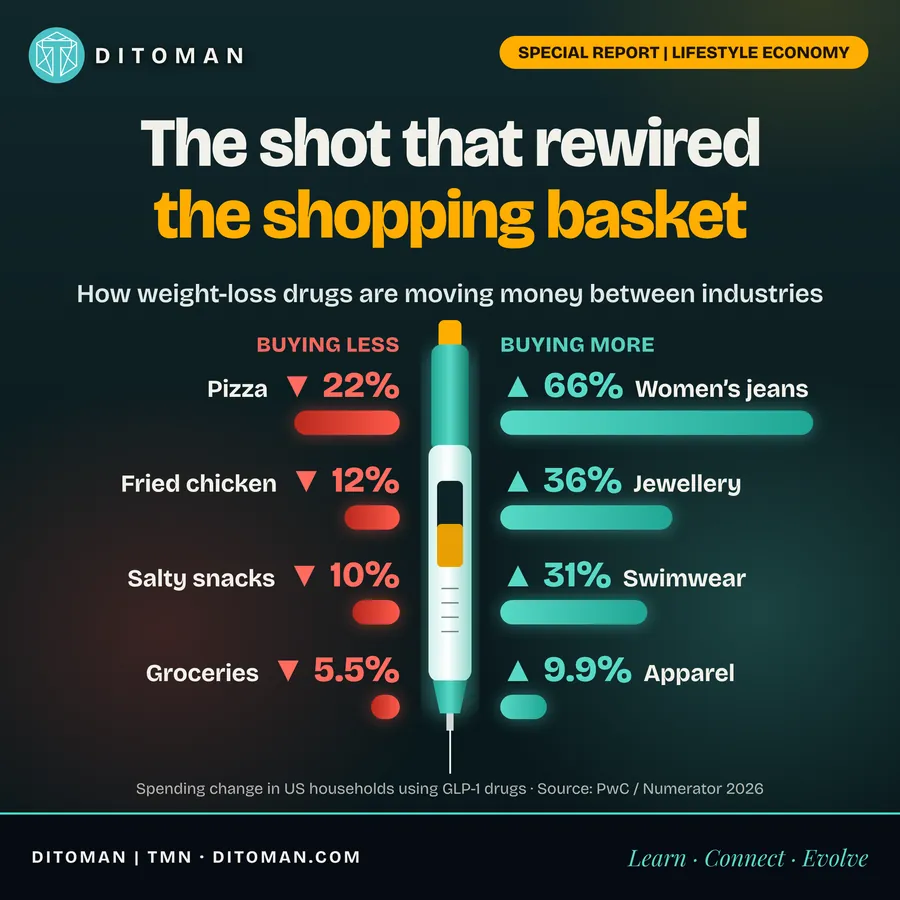

آمپولی که سبد خرید دنیا را عوض کرد
The shot that rewired the shopping basket
داروهای لاغری چقدر میتوانند به صنایع غذایی آسیب بزنند، چه بازارهای تازهای میسازند و چرا پرفروشترین داروی ایران از همین خانواده است
How much weight-loss drugs could hurt food businesses, which new markets they create, and why Iran’s best-selling medicine belongs to the same family
یک قلم تزریق هفتگی دارد کاری میکند که سالها تبلیغ و رژیم نتوانست: میلیونها نفر کمتر میخورند. وقتی آدمها کمتر بخورند، قفسهی چیپس، منوی رستوران، سایز لباس و حتی ترازنامهی غولهای غذایی عوض میشود. این گزارش میپرسد این موج تا کجا میتواند به کسبوکارهای قدیمی آسیب بزند، چه بازارهای تازهای میسازد، و چرا پرفروشترین داروی امروز ایران هم از همین خانواده است.
در یک نگاه
- آمریکا: در ۲۱ درصد خانوارها دستکم یک نفر داروی خانوادهی GLP-1 مصرف میکند؛ این رقم در دی ۱۴۰۳ فقط ۹ درصد بود
- سبد خرید: خرید خواربار خانوارهای مصرفکننده حدود ۵ درصد کم شده؛ پیتزا ۲۲ درصد پایین، شلوار جین زنانه ۶۶ درصد بالا
- بریتانیا: بیش از یک میلیارد پوند از خرید خواربار کم شده است
- ایران: تیرزپاتاید با ۲۸٫۴ هزار میلیارد تومان، پرفروشترین داروی ششماههی اول ۱۴۰۵ از نظر ارزش
- واقعبینی: آمار کل فروش تنقلات آمریکا هنوز تقریباً ثابت است؛ موج واقعی است، اما هنوز سونامی نیست
1. این داروها چه هستند؟
GLP-1 هورمونی است که روده بعد از غذا ترشح میکند: به مغز میگوید «سیر شدم»، تخلیهی معده را کند میکند و به تنظیم قند خون کمک میکند. این داروها همان پیام را قویتر و طولانیتر به بدن میدهند.
| دارو | مادهی مؤثر | سازنده | کاربرد اصلی |
|---|---|---|---|
| Ozempic | سماگلوتاید | Novo Nordisk (دانمارک) | دیابت نوع دو |
| Wegovy | سماگلوتاید | Novo Nordisk | چاقی (تزریقی و قرص) |
| Saxenda | لیراگلوتاید | Novo Nordisk | چاقی |
| Mounjaro | تیرزپاتاید | Eli Lilly (آمریکا) | دیابت نوع دو |
| Zepbound | تیرزپاتاید | Eli Lilly | چاقی |
| Foundayo | اورفورگلیپرون | Eli Lilly | چاقی (قرص) |
در کارآزماییهای بالینی، سماگلوتاید بهطور میانگین حدود ۱۵ درصد و تیرزپاتاید در بالاترین دوز حدود ۲۱ درصد از وزن اولیهی شرکتکنندگان را کم کرده است.
2. از زهر یک مارمولک تا پرفروشترین داروی دنیا
این داستان یکشبه اتفاق نیفتاد؛ سی سال طول کشید.
دههی ۱۳۷۰ (۱۹۹۲):
پژوهشگری به نام جان انگ در زهر مارمولک «هیولای گیلا» مولکولی پیدا کرد که شبیه GLP-1 بدن بود ولی خیلی دیرتر از بین میرفت.
۱۳۸۴ (۲۰۰۵):
اولین دارو از این خانواده، اگزناتاید، برای دیابت تأیید شد؛ روزی دو تزریق.
۱۳۸۸ (۲۰۱۰):
لیراگلوتاید آمد؛ روزی یک تزریق. چهار سال بعد نسخهی لاغریاش (Saxenda) تأیید شد.
۱۳۹۶ (۲۰۱۷):
Ozempic، هفتهای یک تزریق.
۱۴۰۰ (۲۰۲۱):
Wegovy برای چاقی تأیید شد و موج اصلی شروع شد.
۱۴۰۱ و ۱۴۰۲ (۲۰۲۲ و ۲۰۲۳):
Mounjaro و بعد Zepbound از Eli Lilly؛ دارویی که دو هورمون را با هم هدف میگیرد.
۱۴۰۴ و ۱۴۰۵ (۲۰۲۵ و ۲۰۲۶):
نوبت قرص رسید. قرص Wegovy دی ۱۴۰۴ در آمریکا تأیید شد و قرص Foundayo از Eli Lilly همین هفته مجوز چین را گرفت.
درس این خط زمانی:
هر نسل مصرف را سادهتر کرد: از روزی دو تزریق به هفتهای یکی، و حالا قرص. هرچه مصرف سادهتر و ارزانتر شود، تعداد مصرفکننده بیشتر میشود و اثرش بر بازارهای دیگر بزرگتر.
3. چند نفر مصرف میکنند؟
آمریکا:
طبق گزارش PwC (خرداد ۱۴۰۵)، سهم خانوارهایی که دستکم یک مصرفکننده دارند از ۹ درصد در ژانویهی ۲۰۲۵ به ۲۱ درصد در مه ۲۰۲۶ رسیده است. ۳۷ درصد مصرفکنندگان فقط برای کاهش وزن مصرف میکنند (۲۰۲۴: ۲۴ درصد) و ۵۴ درصد بیش از یک سال است که ادامه دادهاند.
بریتانیا:
طبق دادهی Worldpanel (۲۸ آبان ۱۴۰۵)، در ۸٫۵ درصد خانوارها مصرفکننده هست؛ حدود ۲٫۶ میلیون بزرگسال. سهم مردان از ۲۳ به ۳۲ درصد رسیده و قرص، که خرداد امسال مجوز گرفت، حالا ۱۱ درصد مصرفکنندگان را دارد. NielsenIQ با روش خودش این سهم را ۱۲ درصد خانوارها برآورد کرده است.
یک نکتهی مهم:
۸۰ درصد خانوارهای بریتانیایی که مصرفکننده دارند میگویند غذای بقیهی اعضای خانه هم عوض شده است. یعنی اثر دارو از یک نفر به کل سفره میرسد.
4. سبد خرید چطور عوض شده است؟
دو پژوهش مستقل روی دادهی واقعی خرید خانوارها تقریباً به یک عدد رسیدهاند.
دانشگاه کرنل:
پژوهش منتشرشده در Journal of Marketing Research نشان میدهد خرید خواربار خانوار در شش ماه اول بهطور میانگین ۵٫۳ درصد کم میشود (در خانوارهای پردرآمد بیش از ۸ درصد) و خرج فستفود و کافه حدود ۸ درصد.
PwC:
۵٫۵ درصد کاهش خواربار و ۸٫۷ درصد کاهش رستورانهای سریع، شش تا هشت ماه بعد از شروع.
| چه چیزی کم شد | تغییر | چه چیزی زیاد شد | تغییر |
|---|---|---|---|
| پیتزا (رستوران) | ۲۲٫۲٪ کاهش | شلوار جین زنانه | ۶۶٫۱٪ افزایش |
| مرغ سوخاری (رستوران) | ۱۱٫۶٪ کاهش | جواهرات | ۳۶٫۴٪ افزایش |
| تنقلات شور | حدود ۱۰٪ کاهش | لباس شنا | ۳۱٫۱٪ افزایش |
| کافه و شیرینی | ۸٫۰٪ کاهش | پیراهن زنانه | ۲۲٫۱٪ افزایش |
| برگر | ۶٫۴٪ کاهش | پوشاک (کل) | ۹٫۹٪ افزایش |
| خواربار (کل) | ۵٫۵٪ کاهش | گوشت خشک پروتئینی | ۷٫۹٪ افزایش |
| ماست یونانی | ۶٫۸٪ افزایش |
منابع: PwC و Numerator (۲۰۲۶) و کرنل (۲۰۲۵). اینها تغییر خرج خانوارهای مصرفکننده است، نه تغییر فروش کل آن صنعت.
بریتانیا:
مصرفکنندگان در یک سال بیش از ۱ میلیارد پوند کمتر خواربار خریدند؛ ۴۱۵ میلیون بستهی کمتر و سالی ۳۸۹ پوند برای هر خانوار. چیپس ۱۵ درصد پایین آمد و الکل ۱۵ درصد بیشتر از بقیهی خانوارها افت کرد. در مقابل، همین خانوارها ۷۸ میلیون پوند بیشتر از انتظار خرج محصولات سلامت و زیبایی کردند.
5. این موج تا کجا میتواند آسیب بزند؟
اینجا باید سه چیز را از هم جدا کرد: آنچه اندازهگیری شده، آنچه پیشبینی است و آنچه فقط نگرانی بازار است.
اندازهگیریشده:
خانوار مصرفکننده حدود ۵ درصد کمتر خواربار میخرد.
حساب سادهی دیتومان:
اگر ۲۱ درصد خانوارها ۵٫۵ درصد کمتر بخرند، کل بازار خواربار حدود ۱٫۲ درصد کوچک میشود. اگر روزی سهم خانوارها به ۳۵ درصد برسد، این عدد حدود ۲ درصد است. برای صنعتی که سودش به رشد سالانهی ۳ تا ۴ درصدی وابسته است، ۲ درصد یعنی از دست رفتن بیش از نیمی از رشد یک سال. این یک برآورد سرانگشتی است، نه پیشبینی رسمی.
پیشبینی:
EY-Parthenon برآورد میکند تنقلات در ده سال تا ۱۲ میلیارد دلار فروش از دست بدهد: ۷ میلیارد در تنقلات شور و ۵ میلیارد در شیرین. این یعنی تا ۳ درصد افت، نه نابودی.
چرا آسیب در همهجا یکسان نیست؟
ضربه روی «خرید بیفکر» مینشیند: بستهی بزرگ چیپس، شیرینی کنار صندوق، پیتزای آخر شب. مدیرعامل Magnum میگوید مصرفکنندگان هنوز خوراکی لذتبخش میخرند، اما «پرخوری بیهدف» بهشدت کم شده است. پس برندی که روی حجم و عادت حساب کرده بیشتر آسیب میبیند تا برندی که روی کیفیت و لذت کوچک حساب کرده است.
6. چرا هنوز سونامی نیست؟
- آمار کل هنوز ثابت است: طبق دادهی وزارت کشاورزی آمریکا، فروش تعدادی تنقلات در ۲۰۲۴ تقریباً همان ۱۰ میلیارد بستهی سال ۲۰۲۰ بود
- یکسوم قطع میکنند: در پژوهش کرنل حدود یکسوم مصرفکنندگان دارو را کنار گذاشتند و خرج غذایشان به سطح قبل برگشت؛ حتی کمی ناسالمتر
- اثر با زمان کوچکتر میشود: کاهش خرج در ادامهدهندگان دستکم یک سال میماند، اما کمرنگتر
- غولها هنوز نمیلرزند: Walmart میگوید مشتریان مصرفکننده فقط کمی کالری کمتر میخرند و Coca-Cola فشار جدیای گزارش نکرده است
- قیمت و بیمه: بدون پوشش بیمه، هزینهی ماهانه هنوز برای خیلیها سنگین است
نتیجه: مشاوران AlixPartners آن را «روندی برهمزننده، نه تهدید وجودی» مینامند. اما سه عامل میتواند شتابش را زیاد کند: قرص، ارزان شدن و داروهای ماهییکبار.
7. بازار تازه: چه کسانی برندهاند؟
هر پولی که از قفسهی چیپس بیرون میآید، جای دیگری خرج میشود.
- داروسازها: درآمد Eli Lilly در فصل سوم ۲۰۲۶ به ۲۴٫۴ میلیارد دلار رسید، ۳۹ درصد بیشتر از سال قبل. Mounjaro بهتنهایی ۱۰٫۷ و Zepbound ۵٫۴ میلیارد دلار در سه ماه فروخت
- پوشاک: ۷۳ درصد مصرفکنندگان میگویند سایزشان عوض شده است
- پروتئین و لبنیات: ماست یونانی، نوشیدنی پروتئینی و میانوعدهی گوشتی رشد کردهاند
- سلامت و زیبایی و مکمل: ۸۰ درصد مصرفکنندگان دستکم یک محصول کمکی میخرند و ۳۴ درصد در بریتانیا میخواهند بیشتر خرج ویتامین کنند
- ورزش: ۳۶ درصد بیشتر ورزش هوازی میکنند. تمرین قدرتی هم برای حفظ عضله مهمتر شده است
- رستورانهای باهوش: ۳۵ درصد مصرفکنندگان پرس کوچکتر با قیمت کمتر میخواهند. هر رستورانی که این را بدهد، مشتری را نگه میدارد
- یک جای خالی بزرگ: ۸۵ درصد مصرفکنندگان میگویند شرکتها هنوز نیازشان را خوب جواب ندادهاند. این یعنی بازار باز
اندازهی بازار خود دارو:
بازار جهانی داروهای چاقی در ۲۰۲۵ حدود ۵۵ میلیارد دلار بود و برآورد میشود تا ۲۰۳۰ به ۱۵۲ میلیارد دلار برسد؛ نزدیک سه برابر در پنج سال.
8. غولهای غذایی چه میکنند؟
| شرکت | واکنش |
|---|---|
| PepsiCo | خط تازهی Simply NKD با ترکیبات سادهتر، حذف رنگ مصنوعی از Lay's و Gatorade، آزمایش «وعدهی کوچک» |
| Coca-Cola | افزایش تولید شیر پروتئینی Fairlife |
| General Mills | Cheerios پرپروتئین؛ افزایش تا ۲۳ درصدی سرمایهگذاری |
| Conagra | تمرکز بر میانوعدهی پروتئینی مثل Slim Jim، آجیل و دانه |
| Kraft Heinz | ۶۰۰ میلیون دلار سرمایهگذاری برای احیای برندهای اصلی |
منبع: گزارش رویترز. مدیرعامل PepsiCo میگوید: فرصتها بیشتر از تهدیدهاست، اما هر دو هست. امسال نزدیک سه دوجین شرکت غیردارویی در جلسههای گزارش مالی از این داروها حرف زدهاند؛ سال قبل ۱۴ شرکت.
9. سبک زندگی و کسبوکارها کمکم عوض میشوند
این تغییر فقط دربارهی وزن نیست؛ دربارهی این است که آدمها وقت و پولشان را کجا میگذارند.
- غذا از «زیاد» به «خوب»: بستهی کوچکتر، پروتئین بیشتر، قند کمتر
- بیرون رفتن بدون پرخوری: رستوران بیشتر جای دیدار میشود تا جای سیر شدن
- الکل کمتر: هم در آمریکا و هم در بریتانیا خرید الکل افت کرده است
- کمد تازه: کسی که دو سایز کم کرده، همهچیز را دوباره میخرد
- سلامت بهعنوان سرگرمی: ساعت هوشمند، مکمل، باشگاه و اپهای همراه
این الگو آشناست. سیگار که کم شد، صنعت دخانیات نمرد ولی کوچک شد و شکلش عوض شد. گوشی هوشمند که آمد، دوربین و نقشه و ساعت زنگدار جای خود را به یک دستگاه دادند. فناوری اول یک عادت را عوض میکند و بعد عادت، بازارها را.
10. ایران: پرفروشترین داروی کشور
طبق آمار جانشین رئیس سازمان غذا و دارو که خبرگزاری صداوسیما منتشر کرد:
| دارو | فروش ششماههی اول ۱۴۰۵ |
|---|---|
| تیرزپاتاید | ۲۸٫۴ هزار میلیارد تومان |
| انسولین (آسپارت و گلارژین) | ۱۲٫۱ هزار میلیارد تومان |
| سرم نمکی | ۷٫۲ هزار میلیارد تومان |
| ایمونوگلوبولین | ۶٫۵ هزار میلیارد تومان |
| آیودیکسانول | ۵٫۹ هزار میلیارد تومان |
- کل بازار دارو در این شش ماه حدود ۴۰۰ هزار میلیارد تومان بود؛ یعنی تیرزپاتاید بهتنهایی حدود ۷ درصد آن
- فروش این یک دارو بیش از دو برابر انسولین است
- ۸۷ درصد ارزش بازار دارو تولید داخل است
- سیناژن، سازندهی «اسپارتینا» (تیرزپاتاید ایرانی)، با ۳۸ هزار میلیارد تومان اولین شرکت دارویی کشور از نظر ارزش فروش شد
دو نکته برای درست خواندن این آمار:
ارزش فروش بالا یعنی داروی گران، نه لزوماً مصرفکنندهی زیاد؛ تیرزپاتاید در فهرست پرمصرفترینها از نظر تعداد نیست. همچنین ارزش کل بازار دارو ۱۵۵ درصد بالا رفته در حالی که تعداد فقط ۱٫۳ درصد رشد کرده؛ یعنی بخش بزرگی از این عددها اثر قیمت است. آمار رسمیای هم از تعداد مصرفکنندگان ایرانی و سهم لاغری در برابر دیابت منتشر نشده است.
چراغ روشن ماجرا:
ایران از معدود کشورهایی است که این دارو را خودش میسازد. اسپارتینا تیر ۱۴۰۴ وارد فهرست رسمی دارویی کشور شد و چند برند داخلی دیگر هم به بازار آمدهاند. برای کشوری که میتواند داروی زیستی پیچیده بسازد، این هم بازار داخلی است و هم فرصت صادرات به منطقه.
برای کسبوکارهای ایرانی:
همان درس دنیا اینجا هم صادق است. تولیدکنندهی لبنیات پروتئینی، میانوعدهی سالم، بستهی کوچکتر و پوشاک، جلوتر از موج میایستد.
11. خطرها و چیزهایی که هنوز نمیدانیم
این داروها درمان پزشکیاند، نه محصول زیبایی.
- عوارض شایع: تهوع، استفراغ، اسهال و یبوست
- کاهش عضله: بخشی از وزن کمشده عضله است
- عوارض جدیتر و کمیابتر: التهاب لوزالمعده، سنگ و التهاب کیسهی صفرا، کمآبی و آسیب کلیه، کندی شدید تخلیهی معده
- بازگشت وزن: با قطع دارو بخشی از وزن برمیگردد
- دادهی چنددههای: هنوز کافی نیست. تومور تیروئید در مطالعات حیوانی دیده شده، اما ارتباط قطعی در انسان ثابت نشده است
- بازار غیررسمی: داروی بدون نسخه و بدون زنجیرهی سرد، خطر واقعی است
در مقابل، پژوهشها نشان دادهاند این داروها برای بیماران واجد شرایط، جز کاهش وزن، به سلامت قلب و کنترل بیماریهای متابولیک هم کمک میکنند.
تحلیل دیتومان
آسیب:
در کوتاهمدت محدود است؛ حدود یک تا دو درصد از بازار خواربار و تا سه درصد از تنقلات. ولی ضربه دقیقاً روی سودآورترین بخش مینشیند: خرید بیفکر و پرتکرار.
فرصت:
بزرگتر از آسیب است. بازاری که در پنج سال سه برابر میشود، و میلیونها مصرفکنندهای که میگویند هنوز کسی نیازشان را جواب نداده است.
چه چیزی سرنوشت را تعیین میکند؟
قیمت، قرص و ماندگاری. اگر دارو ارزان و خوردنی شود و مردم ادامه بدهند، این یکی از بزرگترین جابهجاییهای مصرف در یک نسل خواهد بود. اگر یکسوم همچنان قطع کنند، موجی بزرگ اما قابلمدیریت میماند.
و برای ما:
یک نوآوری در آزمایشگاه میتواند سفره، کمد لباس و بازار سهام را با هم عوض کند. شاید نتیجهاش این باشد که صنایع غذایی بیشتر سر کیفیت رقابت کنند تا حجم؛ تغییری که حتی برای کسی که هرگز این دارو را مصرف نکند خوب است.
انتخاب روش مدیریت وزن حق هر فرد است؛ مهم این است که با آگاهی و مشورت پزشک باشد، نه با تبلیغ و فشار اجتماعی.
بیشتر بخوانید
منابع
- PwC: GLP-1 consumer trends 2026
- Cornell Chronicle: Ozempic is changing the foods Americans buy (Journal of Marketing Research)
- Food Manufacture / Worldpanel: GLP-1 drugs cut £1bn from UK grocery spend (19 Nov 2026)
- NielsenIQ: UK households and GLP-1 (July 2026)
- EY-Parthenon: GLP-1 and snack brands
- FoodNavigator: snack sales hold steady (USDA data)
- AlixPartners: disruptive trend, not existential threat
- Reuters via Inside Retail: how brands are reacting
- Eli Lilly Q3 2026 results (SEC filing)
- Seoul Economic Daily: oral obesity drugs, market forecast (24 Nov 2026)
- IRIB News: Iran medicine sales, first half of 1405
- Asr Iran: Spartina (tirzepatide) enters Iran's drug list
آخرین بازبینی: ۳ آذر ۱۴۰۵. آمار خرید خانوارها، فروش دارو در ایران و نتایج مالی را از منبع اصلی بررسی کردیم. تعداد دقیق برندها و مجوزهای داخلی تیرزپاتاید را نتوانستیم مستقل تأیید کنیم و نیاوردهایم. این گزارش آموزشی و اقتصادی است و توصیهی پزشکی یا سرمایهگذاری نیست.